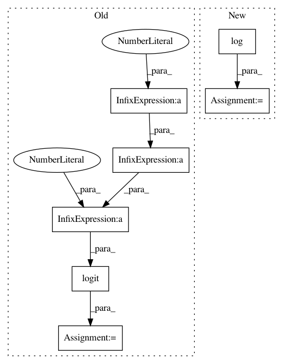

8bd963500d490db3d7ed15bed06af3d439b90006,pymc3/distributions/transforms.py,SimplexTransform,jacobian_det,#SimplexTransform#Any#,152
Before Change
def jacobian_det(self, y):
Km1 = y.shape[0]
k = arange(Km1)
eq_share = logit(1./(Km1 + 1 - k))
yl = logistic(y + eq_share)
yu = concatenate([[1], 1-yl])
//S,_ = theano.scan(fn=lambda prior_result, s_i: prior_result * s_i, sequences=[yu], outputs_info=t.ones((), dtype="float64"))
S = t.extra_ops.cumprod(yu)
After Change
def jacobian_det(self, y):
Km1 = y.shape[0]
k = arange(Km1)
eq_share = -log(Km1 - k) //logit(1./(Km1 + 1 - k))
yl = y + eq_share
yu = concatenate([[1], 1-logistic(yl)])
S = t.extra_ops.cumprod(yu)
In pattern: SUPERPATTERN
Frequency: 3
Non-data size: 7
Instances
Project Name: pymc-devs/pymc3
Commit Name: 8bd963500d490db3d7ed15bed06af3d439b90006
Time: 2015-06-18
Author: jsalvatier@gmail.com
File Name: pymc3/distributions/transforms.py
Class Name: SimplexTransform
Method Name: jacobian_det
Project Name: pymc-devs/pymc3
Commit Name: fd76e96ce1a9718be1ae141c5f3cabddf48ca85f
Time: 2020-09-27
Author: dominik.otto@izi.fraunhofer.de
File Name: pymc3/distributions/transforms.py
Class Name: StickBreaking
Method Name: forward
Project Name: pymc-devs/pymc3
Commit Name: 8bd963500d490db3d7ed15bed06af3d439b90006
Time: 2015-06-18
Author: jsalvatier@gmail.com
File Name: pymc3/distributions/transforms.py
Class Name: SimplexTransform
Method Name: backward